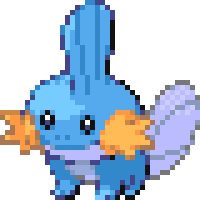

In every game, players are given the opportunity to choose a starter pokemon, which will be your first companion in the journey. Starters will always be 3 different types:
There are also 16 more pokemon types that appear in the games:
Pokemon can also be 2 types at once!
*My favorite pokemon is Mudkip -> 
Mudkip is water/ground type - it's based off of a mudskipper and an axolotl :0